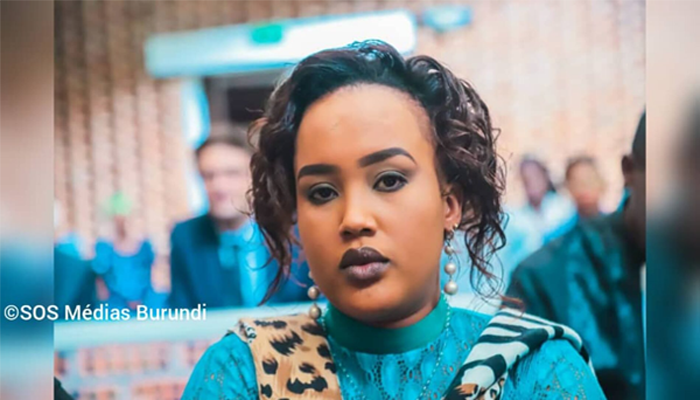
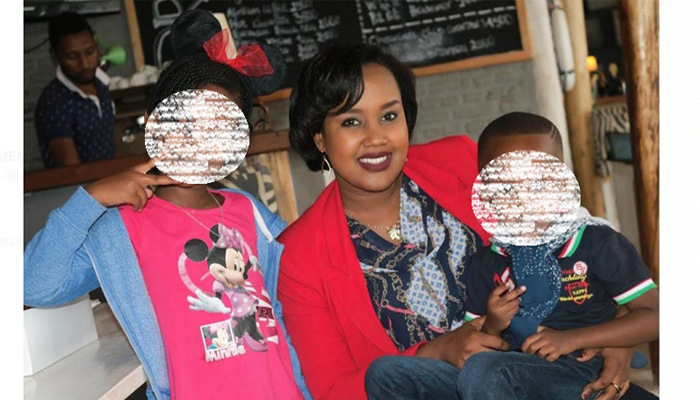
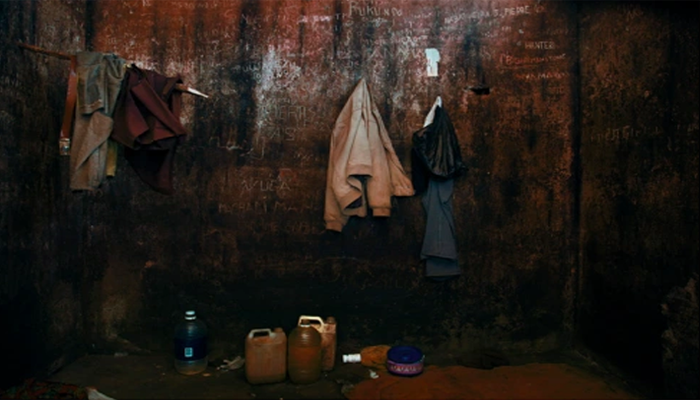
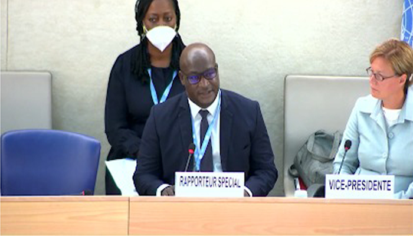
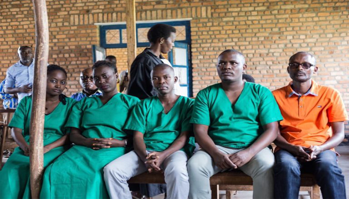
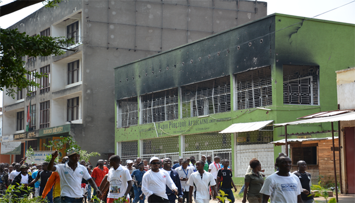

Floriane Irangabiye - reported to be the only female journalist imprisoned on the continent of Africa - has been imprisoned for a year and three months on charges of "undermining the integrity of the national territory". Sentenced to 10 years in prison and a fine of $1 million Burundian francs, her story is only one of the many journalists mistreated in the East African nation. In the slideshow below you will find key information regarding the current state of Floriane's case and press freedom in Burundi.
1 / 7

Floriane appears before the Supreme Court of Burundi for her appeal after a failed attempt to get the charges dismissed at the Court of Appeal of Mukaza in Bujumbura.
2 / 7

Floriane is a single mother of two who, according to her family, desperately misses her 10 year old daughter and 7 year old son - playing with them, and going out to the lake.
3 / 7
Floriane is currently awaiting the results of her appeal to the Supreme Court in Bubanza prison in Bujumbura. Floriane was transferred to Bubanza at the request of her lawyer so she could be closer to her family and treated for her worsening medical state.
4 / 7

Floriane served the majority of her sentence thus far in Muyinga prison (aka "the Dungeon"). Her cell was located closest to the prison kitchen which, mixed with the humid outdoor environment, caused her asthma to flare up severly.
5 / 7

United Nations' Special Rapporteur on Burundi, Gaetan Zongo, has spoken out against the imprisonment of Floriane. He urges Burundi to release her with full pardon. He also urges the Burundian government to end nationwide media supression.
6 / 7

Floriane isn't the only journalist who has been imprisoned on similar charges in recent history. These four Iwacu reporters were pardoned by presidential decree in 2020 after serving 14 of the 30 months they were sentenced to in 2019.
7 / 7

Journalist imprisonment became a common occurence following the protests of 2015. During the protests, the government openly supressed media organizations and members by threatening their lives. Many reporters, including Floriane, fled the country and have lived in exile since.
❮
❯